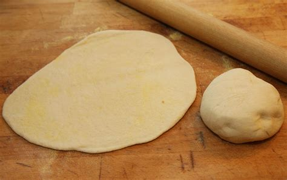

Home
Pizza Dough

Recipe Description
This pizza dough recipie features Gordon Ramsay's street pizza dough recipe made famous by his restaurant, Street Pizza. Street Pizza follows a simple philosophy - pizza doesn't need to be complicated. This recipe honors this philosophy with it's small ingredient list and forgiving cooking instructions.
Ingredients
- 400 grams strong white flour
- 1 tsp fast-action dried yeast
- 2 tsp sea salt
- 250 ml lukewarm water
- 2 tsp extra virgin olive oil
Steps
- Put the flour into a mixing bowl, then sprinkle in the yeast.
- Add warm water and oil, mix together slightly, then add the salt.
- Move to a clean work surface and knead until smooth. This will take 8-10 minutes. Alternatively, you can make the dough using a stand mixer fitted with a dough hook.
- Divide dough in half and roll into balls. Place into a deep dish dusted with flour and lightly flatten the balls.
- Cover with cling film and leave to rise at room temperature for 1 hour 30 minutes or until doubled in size.